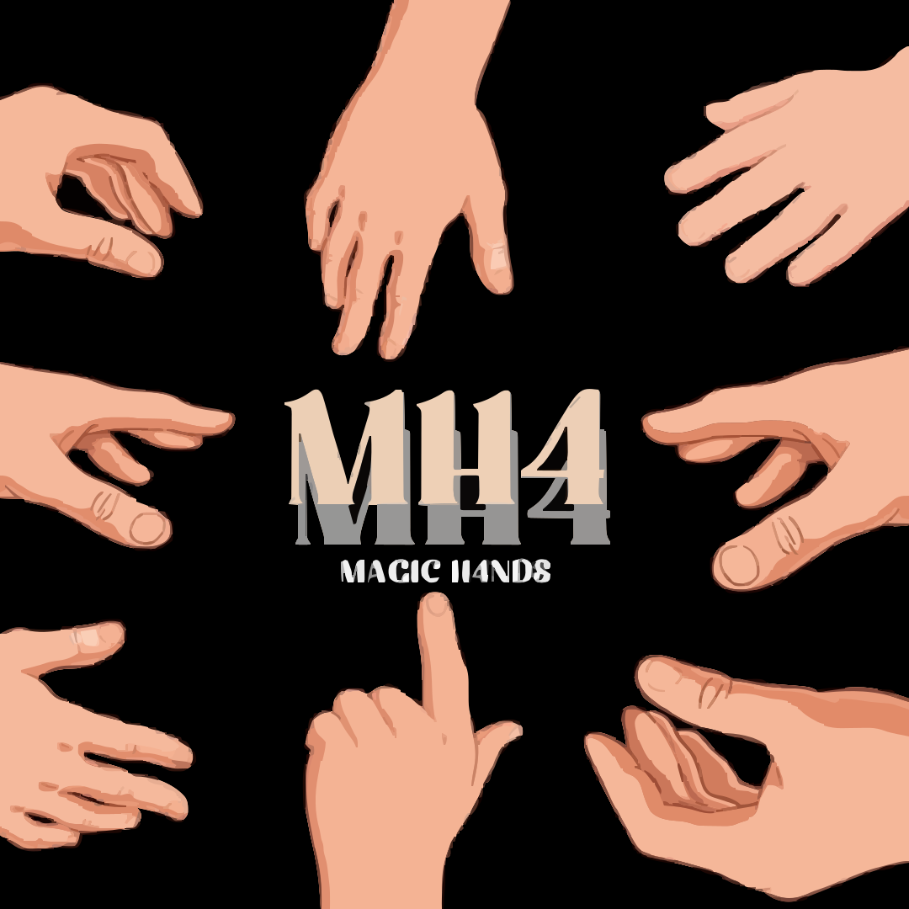
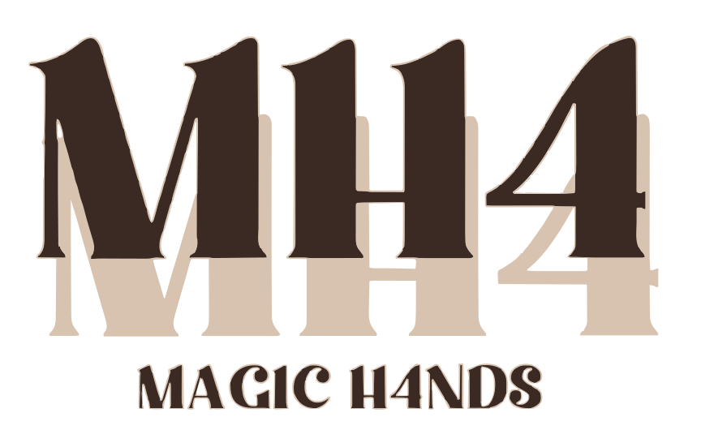
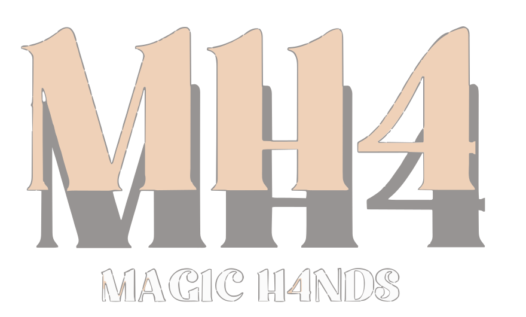
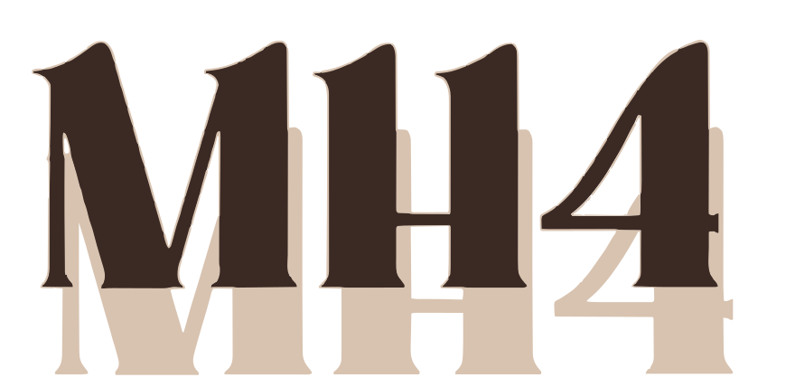
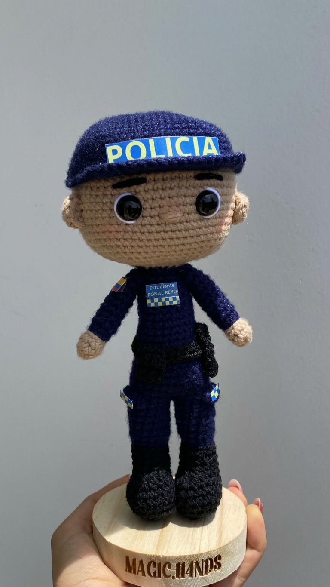

Hoja de marca · propuesta
Magic H4nds
Identidad extraída de su propio logo y de su diseño de “Información”, sin inventar una marca nueva: se ordena lo que ya es suyo.
Logo

logo-completo.svg
monograma-mh4-oscuro.svg · fondos claros
monograma-mh4-sin-fondo.svg · fondos oscuros o de color
mh4-oscuro.svg · favicon
Color
Tipografía
Títulos · Gloock
Tejido a mano en Vélez, Santander
Serif de alto contraste, pariente del “MH4” del logo.
Texto · Figtree
Tu persona favorita convertida en amigurumi, con su ropa, su profesión y sus detalles, sobre base de madera grabada. Listo en 15 a 20 días hábiles y con envío a todo el país.
Etiqueta · Figtree 800 · mayúsculas
En uso
Hecho a mano · bajo pedido · envíos nacionales
Lo que imaginas, tejido punto por punto
Amigurumis personalizados, flores que no se marchitan y ropa tejida en Vélez, Santander.

Personalizados · 15–25 cm
Funko personalizado
Tu persona favorita, con su uniforme y detalles, sobre base de madera grabada.
Cotizar por WhatsAppReglas de uso
- El fondo de página es lino; el crema se reserva para superficies de marca (es el color de su diseño de Información).
- El rosa original (#E28180) es decorativo: con texto blanco no alcanza contraste. Para botones, rosa profundo.
- El logo completo, con las manos, va siempre sobre carbón; en cabeceras pequeñas se usa el monograma.
- Las fotos de producto llevan el protagonismo; la marca las enmarca, no compite con ellas.